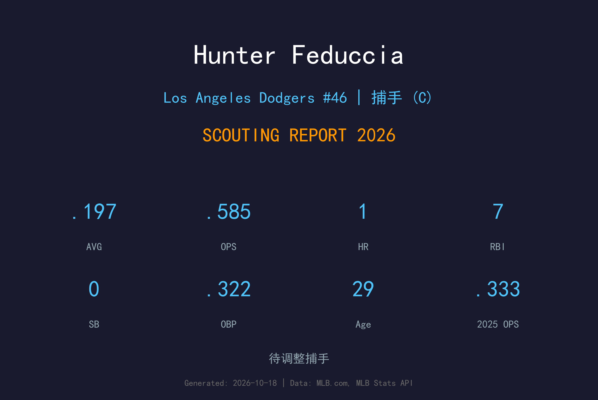
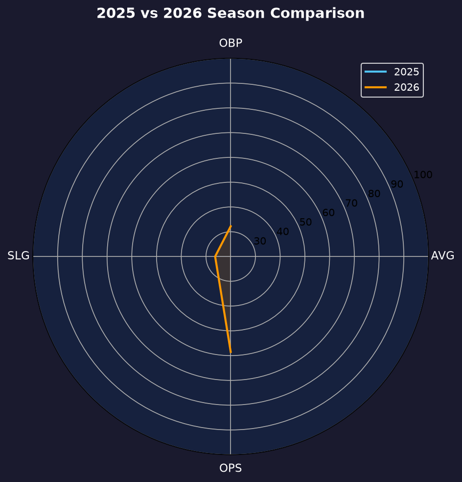
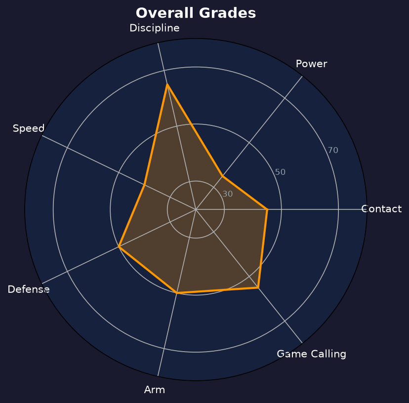

Los Angeles Dodgers #12 | 捕手 | 左打 | 替补火捕

Hunter Feduccia 是道奇的替补捕手，以左打身份、稳健守备与超出预期的选球能力站稳大联盟 roster。
2026年他出赛33场，缴出.197/.322/.263、OPS .585。打击率虽未达两成，但14次保送对16次三振（BB/SO 比0.88）极为亮眼——上垒率.322比打击率高出.125，是道奇阵容中"最会选球的替补"。
29岁的 Feduccia 在 Will Smith 身后提供可靠的蹲捕与 day-game 先发。他的存在让道奇敢于让 Smith 轮休而不损失太多 on-base 能力，是球队深度阵容中低调但重要的一环。
在道奇体系耕耘多年后直升大联盟，首季即展现左打替补价值。
91打席选到14保送，BB/SO 比0.88 全队替补球员最佳。

| 赛季 | G | AVG | OBP | SLG | OPS | HR | RBI | BB | SO |
|---|---|---|---|---|---|---|---|---|---|
| 2025 | 2 | .000 | .333 | .000 | .333 | 0 | 0 | 1 | 0 |
| 2026 | 33 | .197 | .322 | .263 | .585 | 1 | 7 | 14 | 16 |
2025年仅为2场零星出赛（1保送无打数），2026年才是真正意义的首个完整替补赛季。
Feduccia 的挥棒以 contact 为导向，追求把球推向外野。他的长打工具薄弱（SLG .263、整季仅1轰），但靠着 patience 与 foul-off 能力，经常能把打席拖到 deep count 后选到保送。
这是他最突出的 MLB 级技能。91打席14保送（保送率15.4%）在全队排前列，BB/SO 比0.88甚至优于不少主力。OBP-AVG差距.125 说明他的上垒几乎不靠安打——这在替补球员中极为罕见。
Feduccia 的 framing 与阻挡稳定，传球臂力中等。作为替补，他的 preparation 受到教练组好评——每次先发前都会与投手群充分沟通打者报告，是 Smith 身后让人放心的"二号大脑"。
33场出赛是他职业生涯的最大工作量。虽然 .197 的打击率不够体面，但 .322 上垒率让他每次上场都能消耗投手球数、为打线创造价值。对于一名替补捕手，这是超额完成任务。

用选球弥补火力的替补捕手，深度阵容可靠拼图
B- 级 / 合格替补
Hunter Feduccia 的2027赛季定位不变：继续担任 Smith 的替补，偶尔在指定打击或一垒工具人角色中获得零星出赛。若能维持.320+上垒率，他有机会争取更多先发出赛数。
2026：33场、.197/.322/.263、保送率15.4%——首个完整替补赛季
2027：目标 40-50 场出赛、打击率回升至.230+
2028+：以 veteran backup 身份延续生涯，或转任教练/球探
Hunter Feduccia 出生于路易斯安那州什里夫波特，2018年被道奇在第7轮选中。他在小联盟稳步成长，以左打捕手的身份在2023年登上大联盟，成为道奇自家培养的替补捕手答案。
在道奇，Feduccia 以其 patience 与准备功课著称。每次先发前他都会研究对手投手群的配球倾向，这份专业态度让他在有限的出赛机会中总能做出正确选择。
2026年他未入选道奇季后赛名单（球队选择带三名捕手中的另外两人），这让他把目标锁定在2027年争取更多信任票。